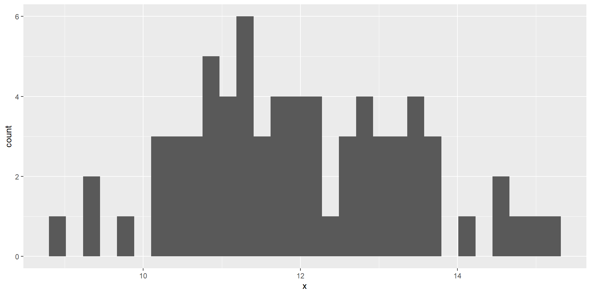
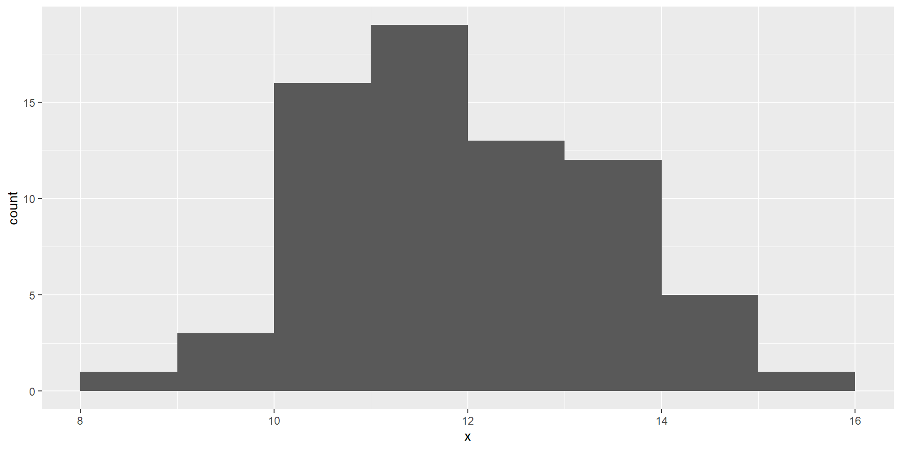
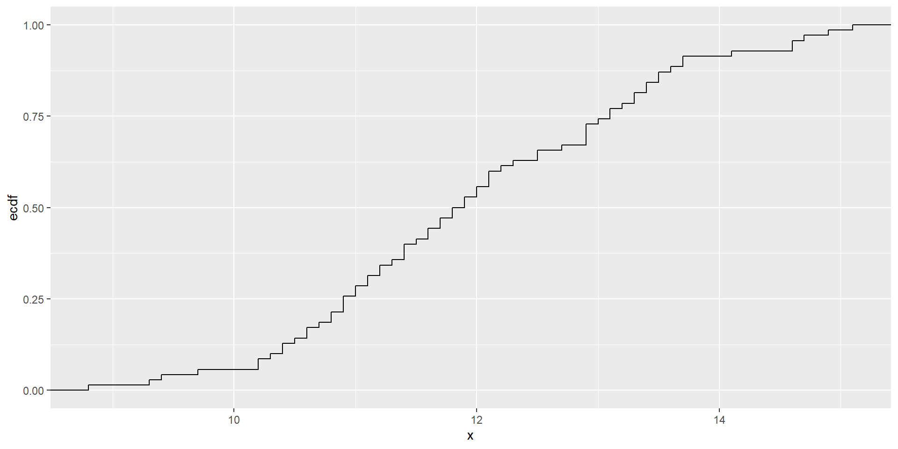
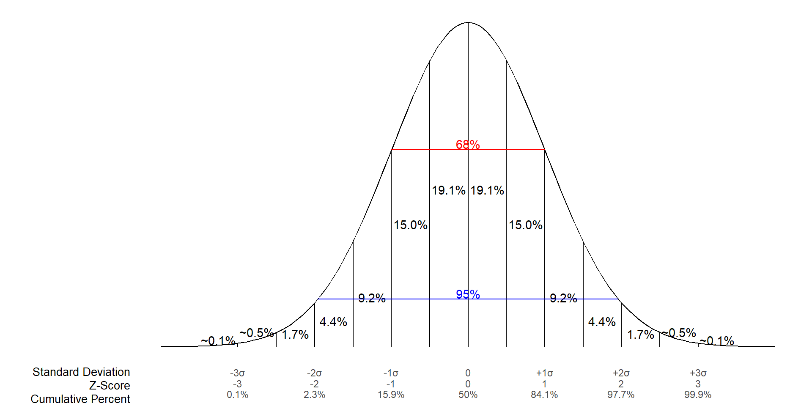
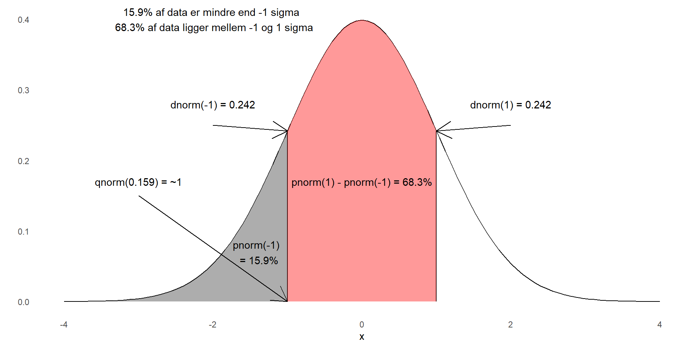

”Statistics is the science of collecting, summarizing, presenting and interpreting data, and of using them to estimate the magnitude of associations and test hypotheses. It has a central role in medical investigations” Indledende afsnit i lærebogen ”Medical statistics””
Målet med statistik
Deskriptiv statistik
Histogrammer
Gennemsnit, median
Spredning, percentiler, range
Inferens
Generel information fra en stikprøve
Hypotesetest og konfidensintervaller
Prædiktion
Forudsige udfald baseret på data
Stikprøve vs population
Populationen er det komplette sæt af entiteter† vi ønsker at lære noget om
Stikprøven er den del mængde af det komplette, som vi har data for
Populationen indeholder stikprøven. Men stikprøven dækker sjældent hele populationen‡
Vi ønsker ofte at kunne sige noget om populationen, baseret på stikprøven. Det kalder vi inferens.
†) Alle børn i Danmark. Alle heste i Danmark. Koncentrationen af Magnesium i drikkevandet - over alt! ‡) Danske registerdata kan være undtagelsen
Fordelinger
Der er i populationen aldrig en enkelt værdi. Der er altid flere.
Når vitager en stikprøve får vi aldrig en enkelt værdi. Der er altid flere.
Eller - der er en fordeling af værdier.
Så vi har en fordeling af værdier i populationen - det er den “sande” fordeling.
Og vi har en fordeling af værdier i stikprøven - det er fordelingen i vores stikprøve
Parametre vs statistik
Parametre beskriver fordelingen i populationen.
(delvist) Teoretiske tal - de eksisterer, men vi kan ikke måle dem.
Den sande værdi af den gennemsnitlige højde af mænd i Danmark findes. Men vi ved ikke hvad den er, for vi kan ikke måle højden af alle mænd. Det sande gennemsnit kalder vi \(\mu\).
Der er en sand variation (vi kommer til det) af højden af alle mænd i Danmark. Den findes, og vi kalder den \(\sigma^2\). Men vi ved ikke hvad den er, og vi kan ikke finde ud af hvad den er.
Statistikken derimod er det vi ved hvad er. Det er gennemsnitshøjden af alle mænd i vore stikprøve. Den kalder vi \(\hbar{X}\). Variansen kan vi også beregne. Den kalder vi \(s^2\)
Bemærk forskellen i notationen.
Fra statistik til parametre
Vi kan bruge \(\hbar{X}\) og \(s^2\) til at estimere de ukendte parametre: \(\mu\) og \(\sigma^2\)
Hvis man vil kunne huske hvad non-parametriske tests er - så skal man kunne huske det her.
Typer af data - kategoriske
Data falder i en kategori. Eller i en anden. Ikke i begge. Vi kalder dem ofte kvalitative. :::{.incremental} * Nominale data - Der er ingen rækkefølge - ingen er “bedre” end andre - Yndlingsfarve - mand/kvinde - Ja/nej * Ordinale data - Stadig kategoriske - Der er en naturlig rækkefølge - Højde: Lav, medium, høj - Terningekast - Socialklasse :::
Typer af data - kvantitative
Numeriske data - målinger eller optællinger
Diskrete
Kun specifikke værdier er mulige
Antal børn
Antal senge på et hospital
Kontinuærte
Målbare enheder, med mulige værdier der ligger i et interval
Median: Den midterste værdi - når alle værdier er stillet op fra mindste til største
Halvdelen af observationerne ligger over medianen. Halvdelen under.
Ufølsom(ish) overfor outliers
Det beregner vi “let” i R:
Modus
Hvad er gennemsnittet af hårfarve?
Kategoriske værdier kan vi ikke beregne middelværdier for. Eller medianer
Istedet: Modus (engelsk “mode”). Ofte “typetal”
Den hyppigst forekommende observation (der kan være mere end en, men så er de lige store)
Ikke følsom overfor outliers. Særligt nyttig ved kvalitative data.
Ikke en indbygget funktion i R!
Ingen modus i R?
No problem
Modus for Species i datasættet iris:
Deskriptiv statistik til beskrivelse af data - variation
Der er variation i vores data. Gennemsnittet af højden for alle mænd i vores stikprøve er muligvis 182 cm. Men nogen er højere, og andre lavere.
Variationen - hvordan er data spredt?
Hvordan kan vi beskrive det?
Hvor meget afviger de enkelte observation fra gennemsnittet
Intuitivt kan vi se at ikke alle værdierne ligger lige tæt på gennemsnittet. Så. Vi kan beregne hvor langt hver værdi ligger fra gennemsnittet. Hvis vi bare lægger de tal sammen, så bliver størrelsen afhængig af hvor mange data punkter vi har. s Vi kan have 10000 punkter der alle sammen ligger utroligt tæt på gennemsnittet. Eller vi kan have 10 punkter der alle ligger meget langt fra gennemsnittet. Vi har brug for et gennemsnit. Problemet er, at gennemsnittet af forskellen for de enkelte punkter fra gennemsnittet, vil give 0. I stedet tager vi kvadratet på alle forskellene - og beregner gennemsnittet af dem. Det betyder også at punkter der ligger langt fra gennemsnittet “fylder” mere end punkter der ligger tæt på gennemsnittet.
Det kalder vi for variansen.
Der er et problem med den. Enheden. Enheden af vores hæmoglobin målinger bliver
\(g^2/ml^2\) Den giver ingen mening. I stedet ser vi på standardafvigelsen, hvor vi tager kvadratroden på variansen.
Histogrammet er en frekvenstabel hvor vi opgiver frekvenser (antallet) af værdier indenfor (ens) intervaller:

Meget afhængig af hvilke intervaller man vælger!

cfd
Ud fra histogrammet får vi en ok ide om hvordan data fordeler sig.
Vi kan også vælge en mere finkornet visualisering, Den Empiriske Kumulative Tæthed af data. Vi har 70 observationer. Hver af dem svarer derfor til 1.4285714%

Det her er vigtigt at forstå.
Hvor ligger kvartilerne?
Hvor ligger 2½ procent percentilen?
Ud fra det kan vi aflæse ved hvilken værdi 25% af observationerne ligger over. Og 75% ligger under.
Vi kan aflæse en hvilken som helst percentil
Hvad med den der normalfordeling?
Vi har set hvordan vores data fordeler sig. De følger sådan nogenlunde normalfordelingen. Men hvad er det?
Bemærk: Afhænger af to parametre. Middelværdien (\(\mu\)), og standardafvigelsen \(\sigma\) (eller er det variansen?) Kender vi dem, kan vi beskrive alt ved den fordeling.
grafisk

Hvordan fandt vi de værdier?

Øvelse
Hvor mange % af data er mindre end 1.5 sigma?
Hvor mange % af data ligger mellem 1 og 2 sigma?
Hvis jeg vil have de 10% største værdier af data - hvilken sigma er de så større end? (hint husk at qnorm giver os værdierne fra -uendelig)
Løsning
Mange normalfordelinger
Den normalfordeling vi har set er den standardiserede. Hvor \(\mu = 0\) og \(\sigma^2 = 1\). Men der er mange andre! Prøv at ændre middelværdien og standardafvigelsen (eller er det varians?)
Hm. Få ændret på lims på en anden måde…
cdf
Normalfordelingen har en helt præcis definition, hvor vi ved at 95% af observationerne ligger inden for +/- 1.96 standardafvigelser.
Så hvis vi kan antage at vores data er normal fordelt. Så kan vi bruge middelværdi og standardafvigelse til at beregne indenfor hvilket interval en observation vil ligge.
Men det er jo stikprøver!
Og det er forskelligt fra populationen. Og er vores data overhovede normalfordelte?
Her er et tricky punkt, hvor vi skal holde tungen lige i munden.
Vi har en population af kvinder. Det kunne være alle kvinder i Danmark. Nu måler hæmoglobin på 70 af dem (den tabel har vi set før). Det er en stikprøve. Vi beregner middelværdi og standardafvigelsen.
Vi tager en anden stikprøve. Og beregner middelværdi og standardafvigelse
(og kalder i øvrigt middelværdien for xbar, i stedet for mu. Og sd for sd i stedet for sigma). Og det gør vi mange gange.
Det der nu viser sig er, at alle de her middelværdier. De er normalfordelte. En enkelt stikprøve behøver ikke at være det. Men middelværdierne fra alle vores mange stikprøver. De er normalfordelte.
Det følger af “Den Centrale Grænseværdisætning”. Det er for matematisk bøvlet at gå i detaljer med. Det vigtige er, at middelværdie for en stikprøve kan vi antage kommer fra en normalfordeling.
Heromkring pnorm etc.
I gamle dage var den slags noget man slog op i tabeller. Det er der ingen der gider.
[1] -1.959964
Øvelse
Dette er værdier fra R. Datasæt B er den målte hastighed af biler på en landevej. Vi antager at værdierne i dataæsttet B er normalfordelte. Beregn et interval som indeholder 95% af B’s værdier
På en eller anden måde skal jeg have kontstrueret et datasæt der giver:
Da vi kan antage normalfordeling (det kan vi ikke, men opgaven siger vi kan, så det kan vi) er 95% af værdierne indeholdt i intervallet
[1] 51.01615 111.34385
Så - 95% af hastighederne vi har målt på landevejen ligger mellem disse to værdier. Og! vi kan antage at den fordeling også gælder i baggrundspopulationen (der altså er alle biler, også dem vi ikke målte på)
En gang til.
Fordelingen af tilfældigt udtagne stikprøvers gennemsnit er altid normalfordelt.
Tilbage til haem tallene. Det er en tilfældig stikprøve. Det vil sige at den estimerer gennemsnittet for populationen. Men ikke præcist. Hvis vi tager en ny stikprøve, får vi et nyt gennemsnit.
Men. De forskellige gennemsnit er normalfordelte omkring gennemsnittet af populationen.
OGSÅ SELVOM POPULATIONEN IKKE SELV ER NORMALFORDELT!